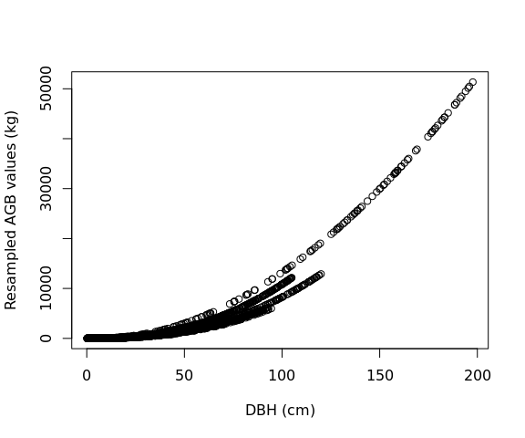
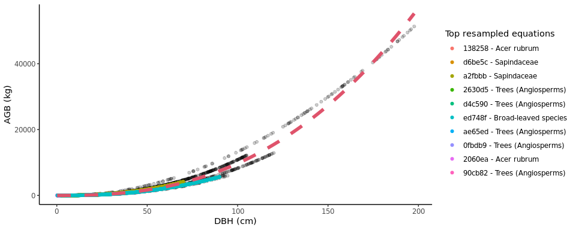

Introduction
Allometric equations for calculation of tree aboveground biomass (AGB) form the basis for estimates of forest carbon storage and exchange with the atmosphere. While standard models exist to calculate forest biomass across the tropics, we lack a standardized tool for computing AGB across the global extratropics.
allodb was conceived as a framework to standardize and simplify the biomass estimation process across globally distributed extratropical forests (mainly temperate and boreal forests). With allodb we aimed to: a) compile relevant published and unpublished allometries, focusing on AGB but structured to handle other variables (e.g., height); b) objectively select and integrate appropriate available equations across the full range of tree sizes; and c) serve as a platform for future updates and expansion to other research sites.
The allodb package contains a dataset of systematically selected published allometric equations. This dataset was built based on 701 woody species identified at 24 large ForestGEO forest dynamic plots representing all major extratropical forest types. A total of 570 parsed allometric equations to estimate individual tree dry biomass were retrieved, checked, and combined using a weighting function designed to ensure optimal equation selection over the full tree size range with smooth transitions across equations. The equation dataset used can be customized with built-in functions that subset the original dataset and add new equations.
The package provides functions to estimate tree biomass (dry) based on user-provided census data (tree diameter, taxonomic identification, and plot coordinates). New allometric equations are calibrated for each species and location by resampling the original equations; equations with a larger sample size and/or higher taxonomic and climatic similarity with the species and location in question are given a higher weight in this process.
Installation
Install the development version of allodb from GitHub:
# install.packages("pak")
pak::pak("ropensci/allodb")Examples
Prior to calculating tree biomass using allodb, users need to provide a table (i.e. dataframe) with DBH (cm), parsed species Latin names, and site(s) coordinates. In the following examples we use data from the Smithsonian Conservation Biology Institute, USA (SCBI) ForestGEO dynamics plot (trees from 1 hectare surveyed in 2008). Full tree census data can be requested through the ForestGEO portal.
The biomass of all trees in one (or several) censuses can be estimated using the get_biomass function.
scbi_stem1$agb <-
get_biomass(
dbh = scbi_stem1$dbh,
genus = scbi_stem1$genus,
species = scbi_stem1$species,
coords = c(-78.2, 38.9)
)Biomass for a single tree can be estimated given dbh and species identification (results in kilograms dry biomass).
get_biomass(
dbh = 50,
genus = "liriodendron",
species = "tulipifera",
coords = c(-78.2, 38.9)
)
#> [1] 1578.644Users can modify the set of equations that will be used to estimate the biomass using the new_equations function. The default option is the entire allodb equation table. Users can also work on a subset of those equations, or add new equations to the table (see ?allodb::new_equations). This new equation table should be provided as an argument in the get_biomass function.
show_cols <- c("equation_id", "equation_taxa", "equation_allometry")
eq_tab_acer <- new_equations(subset_taxa = "Acer")
head(eq_tab_acer[, show_cols])
#> # A tibble: 6 × 3
#> equation_id equation_taxa equation_allometry
#> <chr> <chr> <chr>
#> 1 a4e4d1 Acer saccharum exp(-2.192-0.011*dbh+2.67*(log(dbh)))
#> 2 dfc2c7 Acer rubrum 2.02338*(dbh^2)^1.27612
#> 3 eac63e Acer rubrum 5.2879*(dbh^2)^1.07581
#> 4 f49bcb Acer pseudoplatanus exp(-5.644074+(2.5189*(log(pi*dbh))))
#> 5 14bf3d Acer mandshuricum 0.0335*(dbh)^1.606+0.0026*(dbh)^3.323+0.1222*…
#> 6 0c7cd6 Acer mono 0.0202*(dbh)^1.810+0.0111*(dbh)^2.740+0.1156*…Within the get_biomass function, this equation table is used to calibrate a new allometric equation for all species/site combinations in the user-provided dataframe. This is done by attributing a weight to each equation based on its sampling size, and taxonomic and climatic similarity with the species/site combination considered.
allom_weights <-
weight_allom(
genus = "Acer",
species = "rubrum",
coords = c(-78, 38)
)
## visualize weights
equ_tab_acer <- new_equations()
equ_tab_acer$weights <- allom_weights
keep_cols <-
c(
"equation_id",
"equation_taxa",
"sample_size",
"weights"
)
order_weights <- order(equ_tab_acer$weights, decreasing = TRUE)
equ_tab_acer <- equ_tab_acer[order_weights, keep_cols]
head(equ_tab_acer)
#> # A tibble: 6 × 4
#> equation_id equation_taxa sample_size weights
#> <chr> <chr> <dbl> <dbl>
#> 1 138258 Acer rubrum 150 0.415
#> 2 d6be5c Sapindaceae 243 0.383
#> 3 a2fbbb Sapindaceae 200 0.349
#> 4 2630d5 Trees (Angiosperms) 886 0.299
#> 5 d4c590 Trees (Angiosperms) 549 0.289
#> 6 ed748f Broad-leaved species 2223 0.270Equations are then resampled within their original DBH range: the number of resampled values for each equation is proportional to its weight (as attributed by the weight_allom function).
df_resample <-
resample_agb(
genus = "Acer",
species = "rubrum",
coords = c(-78, 38)
)
plot(
df_resample$dbh,
df_resample$agb,
xlab = "DBH (cm)",
ylab = "Resampled AGB values (kg)"
)
The resampled values are then used to fit the following nonlinear model: , with i.i.d.
. The parameters (a, b, and sigma) are returned by the
est_params() function.
The resampled values (dots) and new fitted equation (red dotted line) can be visualized with the illustrate_allodb() function.
pars_acer <- est_params(
genus = "Acer",
species = "rubrum",
coords = c(-78, 38)
)
illustrate_allodb(
genus = "Acer",
species = "rubrum",
coords = c(-78, 38)
)
The est_params function can be used for all species/site combinations in the dataset at once.
params <- est_params(
genus = scbi_stem1$genus,
species = scbi_stem1$species,
coords = c(-78.2, 38.9)
)
head(params)
#> # A tibble: 6 × 7
#> genus species long lat a b sigma
#> <chr> <chr> <dbl> <dbl> <dbl> <dbl> <dbl>
#> 1 Acer negundo -78.2 38.9 0.0762 2.55 433.
#> 2 Acer rubrum -78.2 38.9 0.0768 2.55 412.
#> 3 Ailanthus altissima -78.2 38.9 0.0995 2.48 377.
#> 4 Amelanchier arborea -78.2 38.9 0.0690 2.56 359.
#> 5 Asimina triloba -78.2 38.9 0.0995 2.48 377.
#> 6 Carpinus caroliniana -78.2 38.9 0.0984 2.48 317.AGB is then recalculated as agb = a * dbh^b within the get_biomass function.
Please note that this package is released with a Contributor Code of Conduct. By contributing to this project, you agree to abide by its terms.
Contributors
All contributions to this project are gratefully acknowledged using the allcontributors package following the all-contributors specification. Contributions of any kind are welcome!


Issue Authors
 ValentineHerr |
 adamhsparks |
 lucas-johnson |
Issue Contributors
 ErvanCH |
 laosuz |
 tylerlittlefield |
 rudeboybert |
 tlbeckham |